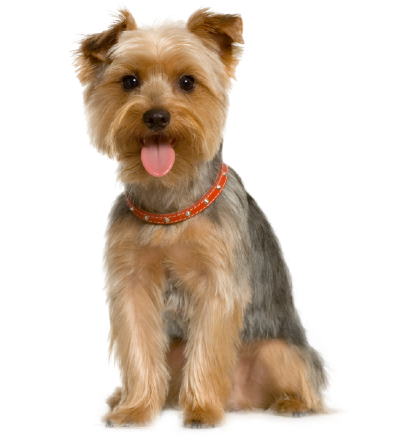
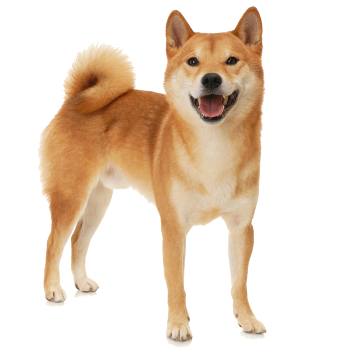
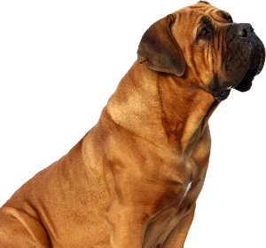
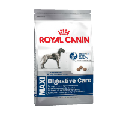
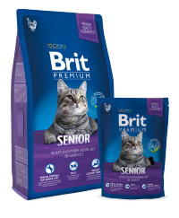
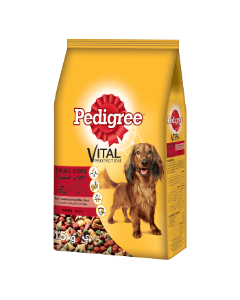
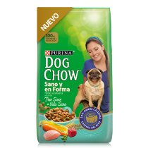
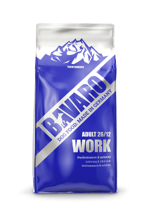
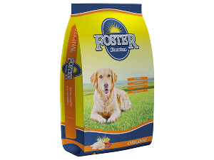

Banho e Tosa
Banho e Tosa para seu amigo canino ou felino.
Temos profissionais qualificados, muitos preparados para cuidar do seu amigo.
Tamanhos das Raças
Cachorros de pequeno porte costumam ter entre 25 e 40cm, e costumam pesar de 2,5kG a 15kG. Alguns exemplo são Pinscher, Yorkshire Terrier, Chihuahua, Dachshund, Poodle, Maltês, Pug e Bulldog Francês
Cachorros de Médio porte costuma ter entre 40cm a 60 cm e pesanm entre 15kg e 25kg. Alguns exemplo são Beagle, Shiba Inu, Cocker Spaniel, Chow-Chow, Schnauzer, Bulldog Inglês, Basset Hound e, novamente, o Poodle, que também pode apresentar o porte médio
Cachorros de Grande porte tem alura média de 70cm peso deles varia entre 25 a 50kg. Alguns exemplo são Labrador, Golden Retriever, Pastor Alemão, Husky Siberiano, Fila Brasileiro
Rações Secas e Úmidas
Aqui você encontra as melhores rações para seu animalzinho de estimação. Com as melhores preços e condições para você.
PRODUTOS
- 
- 
- 
- 
- 
- 